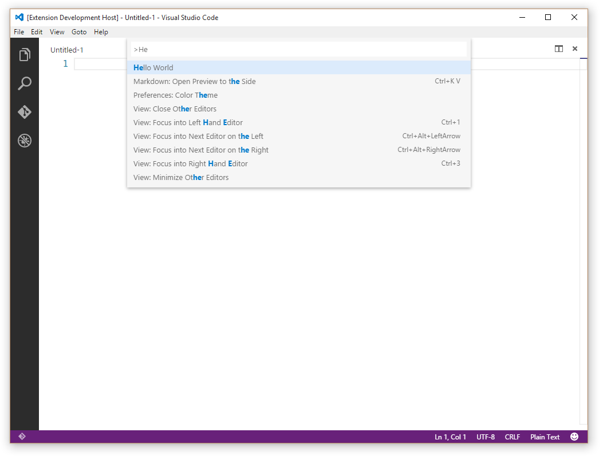

Contribution Points - package.json
This document covers the various contribution points that are
defined in the
package.json extension manifest.
-
configuration -
commands -
menus -
keybindings -
languages -
debuggers -
breakpoints -
grammars -
themes -
snippets -
jsonValidation -
views -
problemMatchers -
problemPatterns
contributes.configuration
Contribute configuration keys that will be exposed to the user. The user will be able to set these configuration options either from User Settings or from the Workspace Settings.
When contributing configuration keys, a JSON schema describing these keys is actually contributed. This ensures the user gets great tooling support when authoring VS Code settings files.
You can read these values from your extension using
vscode.workspace.getConfiguration('myExtension').
Example
"contributes": {
"configuration": {
"type": "object",
"title": "TypeScript configuration",
"properties": {
"typescript.useCodeSnippetsOnMethodSuggest": {
"type": "boolean",
"default": false,
"description": "Complete functions with their parameter signature."
},
"typescript.tsdk": {
"type": ["string", "null"],
"default": null,
"description": "Specifies the folder path containing the tsserver and lib*.d.ts files to use."
}
}
}
}

contributes.configurationDefaults
Contribute default language specific editor configurations. This will override default editor configurations for the provided language.
The following example contributes default editor
configurations for the markdown language:
Example
"contributes": {
"configurationDefaults": {
"[markdown]": {
"editor.wordWrap": "on",
"editor.quickSuggestions": false
}
}
}
contributes.commands
Contribute an entry consisting of a title and a command to
invoke to the Command Palette
(kb(workbench.action.showCommands)).
Note: When a command is invoked (from a key binding or from the Command Palette), VS Code will emit an activationEvent
onCommand:${command}.
Example
"contributes": {
"commands": [{
"command": "extension.sayHello",
"title": "Hello World"
}]
}

contributes.menus
Contribute a menu item for a command to the editor or
Explorer. The menu item definition contains the command that
should be invoked when selected and the condition under which
the item should show. The latter is defined with the
when clause which uses the key bindings
when clause contexts. In addition to the mandatory command property,
an alternative command can be defined using the
alt-property. It will be shown and invoked when
pressing kbstyle(Alt) while hovering over a menu
item. Last, a group-property defines sorting and
grouping of menu items. The navigation group is
special as it will always be sorted to the top/beginning of a
menu.
Currently extension writers can contribute to:
-
The global Command Palette -
commandPalette -
The Explorer context menu -
explorer/context - The editor context menu -
editor/context - The editor title menu bar -
editor/title -
The editor title context menu -
editor/title/context -
The debug callstack view context menu -
debug/callstack/context -
The
SCM title menu
-
scm/title -
SCM resource groups
menus -
scm/resourceGroup/context -
SCM resources
menus -
scm/resource/context -
The
View title menu
-
view/title -
The
View item menu
-
view/item/context
Note: When a command is invoked from a (context) menu, VS Code tries to infer the currently selected resource and passes that as a parameter when invoking the command. For instance, a menu item inside the Explorer is passed the URI of the selected resource and a menu item inside an editor is passed the URI of the document.
In addition to a title, commands can also define icons which VS Code will show in the editor title menu bar.
Example
"contributes": {
"menus": {
"editor/title": [{
"when": "resourceLangId == markdown",
"command": "markdown.showPreview",
"alt": "markdown.showPreviewToSide",
"group": "navigation"
}]
}
}
Context specific visibility of Command Palette menu items
When registering commands in package.json, they
will automatically be shown in the
Command Palette
(kb(workbench.action.showCommands)). To allow
more control over command visibility, there is the
commandPalette menu item. It allows you to define
a when condition to control if a command should
be visible in the Command Palette or not.
The snippet below makes the 'Hello World' command only visible in the Command Palette when something is selected in the editor:
"commands": [{
"command": "extension.sayHello",
"title": "Hello World"
}],
"menus": {
"commandPalette": [{
"command": "extension.sayHello",
"when": "editorHasSelection"
}]
}

Sorting of groups
Menu items can be sorted into groups. They are sorted in lexicographical order with the following defaults/rules.
The context menu of the editor has these default:
-
navigation- Thenavigationgroup comes first in all cases. -
1_modification- This group comes next and contains commands that modify your code. -
9_cutcopypaste- The last default group with the basic editing commands.

You can add menu items to these groups or add new groups of menu items in between, below, or above. Only the editor context menu allows this grouping control.
Sorting inside groups
The order inside a group depends on the title or an
order-attribute. The group-local order of a menu item is
specified by appending @<number> to the
group identifier as shown below:
"editor/title": [{
"when": "editorHasSelection",
"command": "extension.Command",
"group": "myGroup@1"
}]
contributes.keybindings
Contribute a key binding rule defining what command should be invoked when the user presses a key combination. See the Key Bindings topic where key bindings are explained in detail.
Contributing a key binding will cause the Default Keyboard Shortcuts to display your rule, and every UI representation of the command will now show the key binding you have added. And, of course, when the user presses the key combination the command will be invoked.
Note: Because VS Code runs on Windows, Mac and Linux, where modifiers differ, you can use "key" to set the default key combination and overwrite it with a specific platform.
Note: When a command is invoked (from a key binding or from the Command Palette), VS Code will emit an activationEvent
onCommand:${command}.
Example
Defining that kbstyle(Ctrl+F1) under Windows and
Linux and kbstyle(Cmd+F1) under Mac trigger the
"extension.sayHello" command:
"contributes": {
"keybindings": [{
"command": "extension.sayHello",
"key": "ctrl+f1",
"mac": "cmd+f1",
"when": "editorTextFocus"
}]
}

contributes.languages
Contribute the definition of a language. This will introduce a new language or enrich the knowledge VS Code has about a language.
In this context, a language is basically a string identifier
that is associated to a file (See
TextDocument.getLanguageId()).
VS Code uses three hints to determine the language a file will be associated with. Each "hint" can be enriched independently:
-
the extension of the filename (
extensionsbelow) - the filename (
filenamesbelow) -
the first line inside the file (
firstLinebelow)
When a file is opened by the user, these three rules are
applied and a language is determined. VS Code will then emit
an activationEvent onLanguage:${language} (e.g.
onLanguage:python for the example below)
The aliases property contains human readable
names under which the language is known. The first item in
this list will be picked as the language label (as rendered in
the status bar on the right).
The configuration property specifies a path to
the language configuration file. The path is relative to the
extension folder, and is typically
./language-configuration.json. The file uses the
JSON format and can contain the following properties:
comments- Defines the comment symbols-
blockComment- The begin and end token used to mark a block comment. Used by the 'Toggle Block Comment' command. -
lineComment- The begin token used to mark a line comment. Used by the 'Add Line Comment' command. -
brackets- Defines the bracket symbols that influence the indentation of code between the brackets. Used by the editor to determine or correct the new indentation level when entering a new line. -
autoClosingPairs- Defines the open and close symbols for the auto-close functionality. When an open symbol is entered, the editor will insert the close symbol automatically. Auto closing pairs optionally take anotInparameter to deactivate a pair inside strings or comments. -
surroundingPairs- Defines the open and close pairs used to surround a selected string.
If your language configuration file name is or ends with
language-configuration.json, you will get
validation and editing support in VS Code.
Example
...
"contributes": {
"languages": [{
"id": "python",
"extensions": [ ".py" ],
"aliases": [ "Python", "py" ],
"filenames": [ ... ],
"firstLine": "^#!/.*\\bpython[0-9.-]*\\b",
"configuration": "./language-configuration.json"
}]
}
language-configuration.json
{
"comments": {
"lineComment": "//",
"blockComment": [ "/*", "*/" ]
},
"brackets": [
["{", "}"],
["[", "]"],
["(", ")"]
],
"autoClosingPairs": [
["{", "}"],
["[", "]"],
["(", ")"],
{ "open": "'", "close": "'", "notIn": ["string", "comment"] },
{ "open": "/**", "close": " */", "notIn": ["string"] }
],
"surroundingPairs": [
["{", "}"],
["[", "]"],
["(", ")"],
["<", ">"],
["'", "'"]
]
}
contributes.debuggers
Contribute a debugger to VS Code. A debugger contribution has the following properties:
-
typeis a unique ID that is used to identify this debugger in a launch configuration. -
labelis the user visible name of this debugger in the UI. -
programthe path to the debug adapter that implements the VS Code debug protocol against the real debugger or runtime. -
runtimeif the path to the debug adapter is not an executable but needs a runtime. -
configurationAttributesis the schema for launch configuration arguments specific to this debugger. -
initialConfigurationslists launch configurations that are used to populate an initial launch.json. -
configurationSnippetslists launch configurations that are available through IntelliSense when editing a launch.json. -
variablesintroduces substitution variables and binds them to commands implemented by the debugger extension. -
languagesthose languages for which the debug extension could be considered the "default debugger". -
adapterExecutableCommandthe command ID where the debug adapters executable path and arguments are dynamically calculated. The command returns a structure with this format:json command: "<executable>", args: [ "<argument1>", "<argument2>", ... ]The attributecommandmust be a either an absolute path to an executable or a name of executable looked up via the PATH environment variable. The special valuenodewill be mapped to VS Code's built-in node runtime without being looked up on the PATH.
Example
"contributes": {
"debuggers": [{
"type": "node",
"label": "Node Debug",
"program": "./out/node/nodeDebug.js",
"runtime": "node",
"languages": ["javascript", "typescript", "javascriptreact", "typescriptreact"],
"configurationAttributes": {
"launch": {
"required": [ "program" ],
"properties": {
"program": {
"type": "string",
"description": "The program to debug."
}
}
}
},
"initialConfigurations": [{
"type": "node",
"request": "launch",
"name": "Launch Program",
"program": "${workspaceRoot}/app.js"
}],
"configurationSnippets": [
{
"label": "Node.js: Attach Configuration",
"description": "A new configuration for attaching to a running node program.",
"body": {
"type": "node",
"request": "attach",
"name": "${2:Attach to Port}",
"port": 5858
}
}
],
"variables": {
"PickProcess": "extension.node-debug.pickNodeProcess"
}
}]
}
For a full walkthrough on how to integrate a
debugger go to
Debuggers.
contributes.breakpoints
Usually a debugger extension will also have a
contributes.breakpoints entry where the extension
lists the language file types for which setting breakpoints
will be enabled.
"contributes": {
"breakpoints": [
{
"language": "javascript"
},
{
"language": "javascriptreact"
}
]
}
contributes.grammars
Contribute a TextMate grammar to a language. You must provide
the language this grammar applies to, the
TextMate scopeName for the grammar and the file
path.
Note: The file containing the grammar can be in JSON (filenames ending in .json) or in XML plist format (all other files).
Example
"contributes": {
"grammars": [{
"language": "shellscript",
"scopeName": "source.shell",
"path": "./syntaxes/Shell-Unix-Bash.tmLanguage"
}]
}
See Adding Language Colorization for instructions on using the yo code extension generator to quickly package TextMate .tmLanguage files as VS Code extensions.

contributes.themes
Contribute a TextMate theme to VS Code. You must specify a label, whether the theme is a dark theme or a light theme (such that the rest of VS Code changes to match your theme) and the path to the file (XML plist format).
Example
"contributes": {
"themes": [{
"label": "Monokai",
"uiTheme": "vs-dark",
"path": "./themes/Monokai.tmTheme"
}]
}

See Changing the Color Theme for instructions on using the yo code extension generator to quickly package TextMate .tmTheme files as VS Code extensions.
contributes.snippets
"contributes": {
"snippets": [{
"language": "go",
"path": "./snippets/go.json"
}]
}
contributes.jsonValidation
Contribute a validation schema for a specific type of
json file. The url value can be
either a local path to a schema file included in the extension
or a remote server URL such as a
json schema store.
"contributes": {
"jsonValidation": [{
"fileMatch": ".jshintrc",
"url": "http://json.schemastore.org/jshintrc"
}]
}
contributes.views
Contribute a view to VS Code. You must specify an identifier and name for the view. You can contribute to following locations:
explorer: Explorer view in the Side Bardebug: Debug view in the Side Bar
When the user opens the view, VS Code will then emit an
activationEvent onView:${viewId} (e.g.
onView:nodeDependencies for the example below).
You can also control the visibility of the view by providing
the when context value.
"contributes": {
"views": {
"explorer": [
{
"id": "nodeDependencies",
"name": "Node Dependencies",
"when": "workspaceHasPackageJSON"
}
]
}
}

Extension writers should register a provider programmatically to populate data in the view. Refer to examples here.
contributes.problemMatchers
Contribute problem matcher patterns. These contributions work in both the output panel runner and in the terminal runner. Below is an example to contribute a problem matcher for the gcc compiler in an extension:
"contributes": {
"problemMatchers": [
{
"name": "gcc",
"owner": "cpp",
"fileLocation": ["relative", "${workspaceRoot}"],
"pattern": {
"regexp": "^(.*):(\\d+):(\\d+):\\s+(warning|error):\\s+(.*)$",
"file": 1,
"line": 2,
"column": 3,
"severity": 4,
"message": 5
}
}
]
}
This problem matcher can now be used in a
tasks.json file via a name reference
$gcc. An example looks like this:
{
"version": "0.1.0",
"command": "gcc",
"args": ["-Wall", "helloWorld.c", "-o", "helloWorld"],
"problemMatcher": "$gcc"
}
Also see: Defining a Problem Matcher
contributes.problemPatterns
Contributes named problem patterns that can be used in problem matchers (see above).
Next Steps
To learn more about VS Code extensibility model, try these topic:
- Extension Manifest File - VS Code package.json extension manifest file reference
- Activation Events - VS Code activation events reference